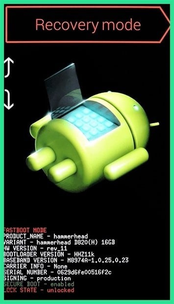

If you're more concerned with getting into your phone than you are with preserving any data stored on it, a factory reset should work in many scenarios. But due to a new anti-theft feature called Factory Reset Protection, you'll need to know your Google account password to use this method if the phone was released in 2016 or later. The process will vary depending on your device type, but for most phones, start by powering the device completely off. When the screen goes black, press and hold the volume down and power buttons simultaneously, which will bring up Android's bootloader menu. From here, press the volume down button twice to highlight the "Recovery mode" option, then press the power button to select it.

Next, hold the power button down and tap the volume up button once, then your phone should enter recovery mode. From here, use the volume buttons to highlight the "Wipe data/factory reset" option, then press the power button to select it. When the process is finished, select the "Reboot system now" option and you should no longer be locked out of your phone.
If it's a newer phone, you'll be prompted to log in with the Google account and password that were previously used on the device before it was reset. As long as you know this information (and you should), it's just a matter of logging back into your Google account to regain access to your phone at this point.